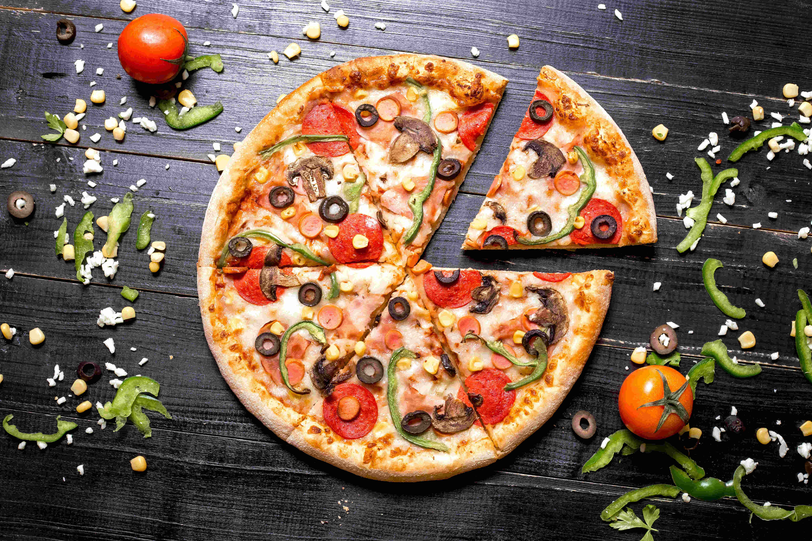
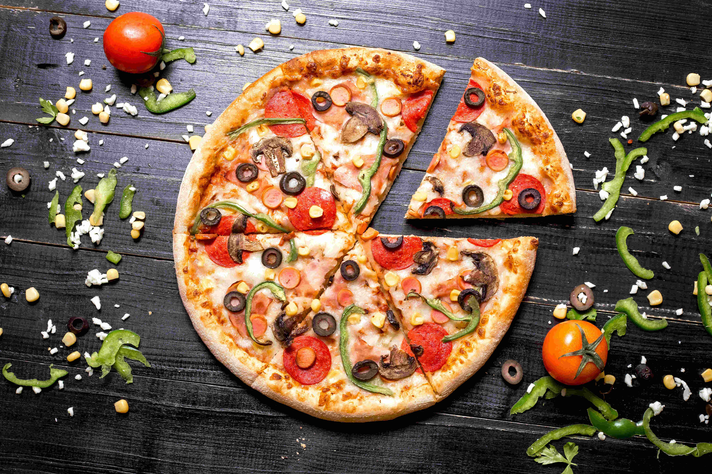

Hakkımda
Merhaba, ben bir yemek tarifi sitesi sahibiyim. Adım Ertan Kadim ve uzun yıllardır yemek yapmayı seviyorum. Yemek yapmak benim için bir tutku ve hayatımın önemli bir parçası. Kendimi mutfağa kapatıp yeni tarifler denemek, lezzetler keşfetmek ve farklı kültürlerin yemeklerini denemek beni her zaman heyecanlandırır. Bu sitede, sevdiklerimle paylaştığım ve denediğim yüzlerce tarifi sizlerle paylaşmak istiyorum. Amacım, sizlere lezzetli ve pratik yemek tarifleri sunarak hayatınızı kolaylaştırmak ve mutfağınızda yeni lezzetler keşfetmenize yardımcı olmaktır. Taze malzemeler kullanarak, basit ve anlaşılır tariflerle herkesin kolayca deneyebileceği yemekler hazırlamayı hedefliyorum. Umarım bu site sizin için yararlı olur ve yemek yapmanın keyfini benimle birlikte keşfedersiniz. Teşekkürler ve afiyet olsun!